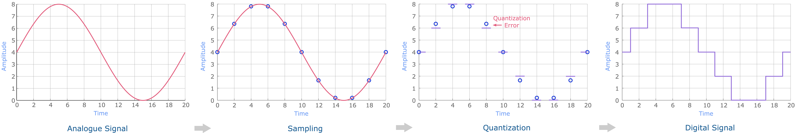

class: title-slide count: false .logo-title[] ## ELECTENG 209 # Embedded Software Design ### Analogue to Digital Conversion .TitleAuthor[Duleepa J Thrimawithana] --- layout: true name: template_slide .logo-slide[] .footer[[Duleepa J Thrimawithana](https://www.linkedin.com/in/duleepajt), Department of Electrical, Computer and Software Engineering (2020)] --- name: S1a # Learning Objectives - What are analogue and digital signals? - Why do we want to process digital rather than analogue signals? - What is an analogue to digital converter (ADC)? - Why do we need ADCs? - How do we characterize ADCs? - Common ADC implementations - Understanding how a successive approximation register (SAR) ADC work - Learning to configure the ADC in the ATmega328P - Learning to develop code to use the ADC in the ATmega328P --- name: S1b # Lecture Quiz - The link to access the lecture quiz is http://q.xorro.com/quvt - Use your username to login (i.e. UPI in the form *abcd001*) - Quiz is available for 3 days and allows multiple attempts - Alternatively scan the QR code below .center[<img src="img/QR.gif" width="300px">] --- class: title-slide layout: false count: false .logo-title[] # Analogue and Digital Signals ### Understanding the Differences --- layout: true name: template_slide .logo-slide[] .footer[[Duleepa J Thrimawithana](https://www.linkedin.com/in/duleepajt), Department of Electrical, Computer and Software Engineering (2020)] --- name: S2 # Analogue vs Digital Signals .left-column[ - Analogue signals are continuous in both time and amplitude - Often sensitive to noise - Most physical signals are analogue - Most electrical sensors produce analogue electrical signals - Can be converted to a digital signal via an analogue to digital converter (ADC) - Digital signals are discrete in both time and amplitude - More resistant to noise - Cannot exactly reproduce analogue signals - Some electrical sensors can output a digital signal - Can be converted to an analogue signal via a digital to analogue converter (DAC) ] .right-column[ .center[<img src="img/AnalogDigital.png" width="280">] ] --- name: S3 # Sensors and Actuators - Often the physical signals/quantities we wish to interact with are not electrical - For example, temperature, light, force, torque, etc. - An electrical transducer converts a physical signal/quantity into an electrical signal or an electrical signal into a physical signal/quantity - Can be categorized as electrical sensors and electrical actuators - Electrical sensors receive a signal from a physical system, and produce an electrical signal as an output - For example, a temperature sensor concerts temperature into an electrical signal (voltage) - Electrical actuators receive an electrical signal as an input, and produce a physical signal as an output - For example, a DC motor converts an electrical signal (current) into mechanical torque .center[<img src="img/SensorsActuators.png" width="950">] --- name: S4 # Processing Signals - Originally almost all electronics performed analogue signal processing - Used standard components such as resistors, capacitors, transistors - Analogue signal processing is often complicated - Usually requires custom hardware - Designing analogue signal processing circuitry takes time and therefore is expensive - Specialized application, like fail-safe systems, require analogue signal processing - For many general applications it is beneficial to move the processing onto a digital platform like a microcontroller - Multiple different signal processing operations can be performed by the same hardware - It is easy to modify the processing by modifying the code - Since most real-world signals are analogue, we must convert them into digital signals before we can process them using a microcontroller - When converting analogue signals to digital signals we lose some information --- name: S5 # Signals in Your Project .center[<img src="img/System.png" height="200">] - The smart energy monitor needs to measure voltage and current to determine power drawn by the load - Voltage and current are analogue electrical signals and therefore they need to be converted into digital signals in order to use your microcontroller to perform signal processing - We will use the ADC peripheral on the ATmega328P to convert analogue electrical signals to digital signals - The ADC only accepts analogue voltage signals that are in the range between 0V and VCC (e.g. 5V) - Because of this you designed circuitry to convert the voltage and current you wish to measure into two analogue voltage signals that falls within this range --- class: title-slide layout: false count: false .logo-title[] # Analogue to Digital Converters ### Fundamentals Principles --- layout: true name: template_slide .logo-slide[] .footer[[Duleepa J Thrimawithana](https://www.linkedin.com/in/duleepajt), Department of Electrical, Computer and Software Engineering (2020)] --- name: S6 # Analogue to Digital Conversion - An analogue to digital converter (ADC) converts an analogue signal to a digital one - We know that an analogue signal is continuous in both time and amplitude, whereas a digital signal is not - Therefore, the analogue signal needs to be digitized/discretized - A process known as sampling is used to convert the analogue signal into discrete time steps - A process known as quantization is used to convert the analogue into discrete amplitudes - The analogue to digital conversion process introduce error - For example during quantization information is lost .center[] --- name: S7 # The Sampling Process - The size of the time intervals the signal is split into, referred to as sample time, is dependent on the sampling frequency (also called sampling rate), measured in hertz \\[ t\_{sample} = \frac{1}{f\_{sample}} \\] - Higher sampling rates allow the original analogue signal to be captured more accurately - However this requires faster ADC hardware, and more memory to store the digital data - To accurately capture a signal the sampling rate must be greater than the Nyquist frequency - Nyquist frequency is equal to twice the highest frequency present in the signal --- name: S8 # The Quantization Process - The full voltage range is broken into discrete intervals - The number of number of bits available in an ADC to represent the amplitude of a signal determine the number of discrete voltage intervals, as the number of intervals is equal to 2<sup>bits</sup> - As example, lets consider an ADC with a full voltage range of 5V and examine how it will represent a 3.2V analogue signal if this ADC had 1-bit, 2-bits and 3-bits to represent an analogue signal .center[<img src="img/Quantization.png" height="270">] --- name: S9 # A 3-Bit ADC - Lets examine how a 3-bit ADC would represent a sin wave with an amplitude of 2.5V and an offset of 2.5V - Assume the ADC has a full voltage range of 5V - The analogue signal is sampled every 2ms - A 3-bit ADC can break the full voltage range into 8 different intervals (i.e. 2<sup>3</sup>) - The analogue voltage samples are represented by digital numbers depending on which voltage interval each samples falls into (e.g. 3.97V is represented by '110' while 4.9V is represented by '111') - Higher the bits in the ADC the more accurately we can represent an analogue signal .center[<img src="img/3bitADC.png" height="170">] --- name: S10 # Characteristics of an ADC (PI) - Acquisition time - How long it takes for the ADC hardware to acquire a sample of the analogue signal - This includes switching multiplexers, charging internal capacitors, waiting for transients to settle, etc. - Conversion time - Time taken by the ADC to convert the sample of the analogue signal into a digital number - Total sampling time - This is the total time taken to make a single ADC reading and is therefore the sum of both the acquisition time and conversion time - The maximum sampling rate is limited by the minimum total sampling time \\[ f\_{sample(max)} = \frac{1}{t\_{acquisition(min)} + t\_{conversion(min)}} \\] - We will learn more about the acquisition process and the conversion process soon --- name: S11 # Characteristics of an ADC (PII) - Resolution (bits) - This is determined by the number of bits available in the ADC to represent the signal - For example, an ADC that has a 8-bit resolution got 2<sup>8</sup> amplitude intervals - Supply voltage (V<sub>adc</sub>) - This is the voltage that is needed to power the internal circuitry of an ADC (e.g. 5V) - Reference voltage (V<sub>ref</sub>) - This specifies the voltage which the input signal is compared to (e.g. 5V) and therefore signals larger than the reference voltage cannot be accurately converted - Step size (V<sub>step</sub>) - This is the smallest signal that can be determined by the ADC and is a function of both the resolution and the reference voltage \\[ V\_{step} = \frac{V\_{ref}}{2^{resolution}} \\] --- name: S12 # ADC Types - There are multiple types of ADC, each focusing on different characteristics - For example faster sampling rate, higher resolution, larger dynamic range, temperature stability, lower error, lower cost, etc. - The most common types include delta-sigma ADC, successive approximation register (SAR) ADC and pipeline ADC - Microcontrollers predominantly employ successive approximation register (SAR) ADC - They have a relatively low part count which keeps cost and size low - They have low power consumption - They have an adjustable resolution, and generally have mid-range resolution - They are generally mid-range for conversion speed - The ATmega328P has an SAR ADC --- name: S13 # Example: Sampling Rate and Resolution .questions[ An ADC is used to convert an analogue signal that is between 0V and 3V to a digital signal. This ADC has a minimum acquisition time of 140ns, and a minimum conversion time of 360ns. - What is the maximum sampling rate for the ADC? - What is the maximum frequency that can be present in a signal such that the ADC could still accurately measure the signal? - What should be the minimum reference voltage that could be used in this design? - What should be the minimum supply voltage this ADC should be specified to? - If the ADC should be capable of measuring down to a 10mV signal what should be the minimum resolution of the ADC? Assume the ADC uses the minimum reference voltage needed for this design. ] --- class: title-slide layout: false count: false .logo-title[] # SAR ADC ### Operating Principles --- layout: true name: template_slide .logo-slide[] .footer[[Duleepa J Thrimawithana](https://www.linkedin.com/in/duleepajt), Department of Electrical, Computer and Software Engineering (2020)] --- name: S14 # The Sampling Process (PI) - [Recall](#S7) that we want to take samples of the analogue signal at discrete points in time - This is because the quantization process takes time as it is not an instantaneous process - During the quantization process we need to keep the signal being converted constant - This is achieved by using a sample and hold circuit to capture a “snapshot” of the analogue signal and store it until the quantization process is completed - The characteristics of the sample and hold circuit are important when designing the analogue circuitry that produce the input signal to the ADC - Ideally the input to the ADC should be coming from a low impedance source .center[<img src="img/SampleHold.png" height="150">] --- name: S15 # The Sampling Process (PII) - At the start of the conversion the capacitor is connected to the input signal by closing the switch in order to charged it to the input voltage - The length of time the capacitor is charging for is the acquisition time - Once charged the capacitor is disconnected by turning the switch off - The quantization is done on the capacitor voltage - Any changes in the input signal does not impact the quantization process as switch is off - The length of time taken for this quantization process is the conversion time - After completing an ADC conversion a new sample is taken and the process repeats .center[<img src="img/SampleHold.png" height="150">] --- name: S16 # The Quantization Process - The sample of the analogue signal is converted to a digital number over a series of ADC clock cycles - Hence the name “successive approximation”, an algorithm that dates back to the 1500s - At each cycle, the sample of the analogue signal is compared to an internally generated voltage that is half the remaining amplitude interval (starts with half the value of V<sub>ref</sub>) - If sample higher than internal voltage, output bit of this cycle is set to 1, otherwise 0 - As an example lets see how an ADC with a V<sub>ref</sub> of 2.56V converts a 1.89V sample .center[<img src="img/SARPlot.png" height="240">] --- name: S17 # SAR Conversion in Tabular Format - Lets examine how an 8-bit SAR ADC that has a 2.56V V<sub>ref</sub> converts a sample of an analogue signal that has an amplitude of 1.89V. - Has 256 amplitude intervals and the step size is 10mv (i.e. 2.56/256) - Result of the conversion is 10111101b (i.e. 189) which equates to 189mV (i.e. 189 x 10mV) .center[<img src="img/SARTable.png" width="700">] --- name: S18 # Acquisition Time & Conversion Time - The acquisition time must be long enough to allow the sample and hold capacitor to charge - This is dependent on the source impedance (R<sub>signal</sub>) of the signal being measured - The capacitor is fully charged after approximately 5 time constants (τ) \\[ \tau = (R\_{signal} + R\_{sample}) C\_{sample} \\] - The conversion time is dependent on the resolution and the cycle time - One cycle is required per bit of resolution - Shorter cycle times will result in faster conversions, but the minimum cycle time will be limited by the ADC hardware capability, as well as the clock speed of the MCU - As the ADC interacts with the microprocessor inside the MCU its clock cycles must be aligned - The ADC is almost always clocked by the same clock as the microprocessor, or a scaled derivative --- name: S19 # Multiple ADC Channels - Often more than one analogue signal needs to be converted - Rather than having multiple ADC units connected to a single pin each, a single ADC unit is often used used - The pins are connected to the ADC unit via a multiplexer - The inputs are called “ADC channels” - Because signals are multiplexed samples taken from each signal will not be at the same point in times - If 2 signals need converting, a sample of the 2nd signal can only be taken after converting the 1st - Some MCUs have 2 or more ADC units to allow simultaneously sample 2 or more signals .center[<img src="img/Multiplex.png" width="580">] --- class: title-slide layout: false count: false .logo-title[] # The ADC on ATmega328P ### Configuring and Using --- layout: true name: template_slide .logo-slide[] .footer[[Duleepa J Thrimawithana](https://www.linkedin.com/in/duleepajt), Department of Electrical, Computer and Software Engineering (2020)] --- name: S20 # ATmega328P ADC Peripheral - 10-bit resolution - 65us – 260us conversion time - Up to 15k samples per second at full resolution - 0V to VCC input voltage range - Three options for reference voltage - Internal 1.1V reference voltage - ADC supply voltage (AVCC) - Externally generated reference voltage - 8 multiplexed channels - Single conversion or continuous conversion modes - Interrupt on conversion completion - ±2 LSB absolute accuracy --- name: S21 # ATmega328P ADC Pins - In the ATmega328P there are 8 ADC pins (PC0 to PC5 together with ADC6 and ADC7) - By default these pins are configured as analogue inputs (this is not always the case) - Though AIN0 and AIN1 also accept analog inputs they are used for the comparator .center[<img src="img/328PPins.png" width="320">] --- name: S34 # Completing the UART Code .codes[ ```c #define F_CPU 16000000UL //Defining system clock frequency #include <avr/io.h> //Needed for using the macros for register addresses #include <string.h> //Needed for using strlen() #include "util/delay.h" //Needed for using _delay_ms() //Prototypes of functions used void uart_init(uint32_t baud_rate); void uart_transmit_byte(char byte); void uart_transmit_array(char* msg); int main(void){ uart_init(9600); //Initializing the UART to 9600 baud, 8N1, with no parity while (1){ uart_transmit_byte(0x48); //Transmitting character 'H' - alternatively uart_transmit_byte('A'); uart_transmit_array("ello World\n\r"); //Transmitting string "ello World" with newline character '\n' //and carriage return character '\r' _delay_ms(1000); //Transmit above characters every 1s } } ``` ] --- name: S35 # Using *printf* and *sprintf* (PI) - The *printf* and *sprintf* commands uses ASCII encoding - These commands take an input string, format it, and output it - To use *printf* and *sprintf* **#include < stdio.h >** - We also need to redirect the output of *printf* to use the UART and to do this we bind a function which transmits a character via the UART .codes[ ```c //Creating a stream variable static FILE usart_stdout = FDEV_SETUP_STREAM(uart_printf, NULL, _FDEV_SETUP_WRITE); int main(void) { stdout = &usart_stdout; //Binding the steam variable to stdout uart_init(9600); //Initializing the UART to 9600 baud, 8N1 with no parity while (1){ printf("Hello World\r\n"); //Printing "Hello World" _delay_ms(1000); //Transmit message every 1s } } ``` ] --- name: S36 # Using *printf* and *sprintf* (PII) - To use *printf* we need a new function called *uart_printf* .codes[ ```c int uart_printf(char var, FILE *stream) { uart_transmit_byte(var); //Using our original function to transmit UART data return 0; } ``` ] - Both *printf* and *sprintf* take a format string which defines the output together with a set of arguments - Format specifiers stating with % sign tell where to put these arguments and how to format them .codes[ ```c printf("Color %s, Number %d, Hex %X","Red", 125, 125); ``` ] - When using sprintf the output is written into a character array - An example of using *sprintf* is provided in the UART lab - The main drawback of using *printf* and *sprintf* is the overhead they add in a very resource limited environment --- name: S37 # Developing Modular Software - At this stage you should be learning to develop modular software - For example, all code relating each peripheral can be in a separate .c file, with a corresponding .h file - Allows code reuse, manageable and readable code, easy to collaborate, easy to test and validate - As an example, lets consider the code developed to use the UART - Use a separate C source file called *uart.c* and a corresponding header file called *uart.h*, which will hold function prototypes for all functions in *uart.c* - The *uart.h* should **#include** as few other .h files as possible and it should be protected against multiple **#include** - **#include "uart.h"** in *uart.c* together with any necessary .h files - **#include "uart.h"** in *main.c* so that we can access our UART functions - You may also want a shared .h such as *common.h* for global **#define** for example **#define F_CPU** - Avoid sharing global variables between .c files by declaring them as *static* --- name: S38 # Adding Source & Header Files to Project - To add the *uart.c* source file and *uart.h* header file to the project right-click on project name in solution explorer and click on *Add* followed by *New Item* .center[<img src="img/NewFiles.png" width="900">] --- name: S39 # Things To Note - Your transmit function is blocking and your MCU cannot do anything else while transmitting over the UART - It can interfere with code that has timing constraints - DO NOT use UART transmissions from within time critical tasks like interrupts - You must understand examples you use during the lab - Your individual understanding will be assessed during all assessments - During 2nd test you will have to develop a C program yourself and simulate it on Proteus - All team members must therefore understand every part of the design - It is critical that you complete the pre-lab of the UART lab before your lab session so that you can get help with the later parts of the lab - Please do not waste the opportunity to get support in the labs - With 160 students in the class, closer to due dates, there will be limited opportunities to ask for help - You need to demonstrate UART transmission during your midsemester review --- class: title-slide layout: false count: false .logo-title[] # Acknowledgments #### These slides are adapted from material prepared by Travis Scott & Muhammad Nadeem